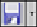

Итоговая работа по курсу "Контроль в ходе производственного процесса"
*Выберете один или несколько правильных ответов
Вопрос 1: Расшифруйте аббревиатуру ПК в терминах Системы «Alfa»
Вопрос 2: В каком интерфейсе выполняется приемка ОТК?
Вопрос 3: Что означает кнопка
Вопрос 4: Как оформить возврат?
Вопрос 5: Выберите правильное утверждение
Вопрос 6: Расшифруйте аббревиатуру «ШПЗ»
Вопрос 7: Как в интерфейсе «Операционный план» выбрать данные по производственной карте?
Вопрос 8: Где в интерфейсе «Операционный план» увидеть информацию об исполнителе производственной работы?
Вопрос 9: Что означает эта кнопка 
Вопрос 10: Где увидеть информацию о ФИО контролера, принимавшего производственную работу?